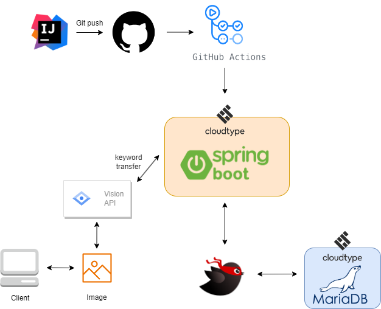

김진성 | 백엔드 개발자

Java 기반이며 Spring Boot와 Mybatis Annotation 방식으로 CRUD 처리가 가능한 Rest API를 활용하여 MVC 패턴 적용 프로젝트를 진행, 이미지 최적화 작업 결과 OCR 성능은 50% 상승하여 사용자들의 처리 시간은 크게 줄어듦. 추가로, 정규식을 활용하여 추출한 텍스트 데이터로 80%의 정확도를 가진 자동 명함 등록 기능을 개발, 이를 통해 사용자들의 작업 효율성이 크게 증가함
언어는 그저 개발하기 위해 사용하는 도구 중 하나이고, 개발자는 개발 환경에 적합한 다양한 언어를 사용해야 한다고 생각합니다.
Github :
https://github.com/KKKJJJSSSEmail :
Number :
Skills
Language / Server
Java / JavaScript / AWS EC2 / Cloudtype
Framework
SpringBoot, MyBatis, BootStrap
DB / Tool
MariaDB, IntelliJ, Github
Projects
커피 레시피 추천(3개월/3명) PL(Full Stack)
- 현대인과 커피, 이 둘의 일상을 완벽하게 연결하는 웹사이트입니다. 원두부터 커피, 카페까지, OCR 기술로 사진 한 장으로 모든 정보를 찾을 수 있습니다.
기간 : 2023.03~2023.06 / Github :
https://github.com/KKKJJJSSS/Beanbox링크 :
https://beanbox.kro.kr/테스트 ID : test / 1234
- System Architecture
- OCR processing process
- Actual Page


담당
- Google Vision API의 머신러닝 OCR을 적용
- 이미지 해상도 조절, 화질 개선을 통한 최적화 작업(50% 이상 OCR 성능향상)
- 카카오맵 API를 이용해 맵 페이지 구현
- 유지보수를 위한 전체적인 코드 리팩토링
- Javascript로 서버와 통신하여 동적 페이지 구현
- MariaDB를 사용한 DB 구축, 비즈니스 로직 작성
- AWS EC2를 사용한 서버 배포, 운영 관리
에러 항목/해결 과정(코드 리뷰)간편한 명함 관리(1개월/1명) Full Stack
- 명함 관리를 더욱 간편하게 만드는 웹사이트입니다. OCR 기술과 정규식을 활용하여, 사진 한 장으로 명함 정보를 즉시 등록하고 정리하여 효율적인 명함 관리가 가능합니다.
기간 : 2023.05~2023.06 / Github :
https://github.com/KKKJJJSSS/BusinessCard링크 :
https://cardmate.kro.kr/테스트 ID : test / 1234
- System Architecture

- UML(Sequence Diagram)
- Actual Page

담당
- Google Vision API의 머신러닝 OCR을 적용
- 이미지 해상도 조절, 화질 개선을 통한 최적화 작업(50% 이상 OCR 성능향상)
- 정규식을 이용한 데이터 필터링 API 구현(정확도 80% 이상)
- BootStrap을 사용해 반응형 페이지 제작
- DB, 서버로의 명함 등록, 수정, 삭제 기능 구현
- AWS -> Cloudtype으로의 서버 이전, 환경 재구축
에러 항목/해결 과정(코드 리뷰)경조사비 추천/관리(1명) Full Stack
- 경조사비를 관리할 수 있는 웹사이트를 구축했습니다. JPA를 활용하여 로직을 구성했고, 상황에 맞는 알맞은 경조사비를 추천받을 수 있습니다.
기간 : 2023.11~2023.11 / Github :
https://github.com/KKKJJJSSS/CAC링크 :
http://13.209.125.59:8080/- Actual Page
담당
- JPA를 이용하여 데이터베이스와 효율적으로 통신하는 로직을 구성
- 업로드 및 삭제 기능에 대한 유효성 검사를 강화하여 안정성 확보
- 데이터 검색을 통한 데이터 필터링 기능 구현
- 데이터를 정확한 형식으로 변환하여 데이터의 일관성 유지 및 처리 효율성 향상
- Kakao 로그인 기능을 구현하기 위해 Oauth를 활용하여 보안적인 측면을 강화